Patadas,Defensas,Posiciones
PATADAS (CHAGUI SUL) Principio
- AP CHAGUI: Patada al frente.
- YOP CHAGUI: Patada lateral.
- DOLLYO CHAGUI: Patada semi-circular a la cara.
- NERYO CHAGUI: Patada descendente.
- BAKAT TARI FURIGUI: Patada circular hacia fuera.
- AN TARI FURIGUI: Patada circular hacia dentro.
- TUIT CHAGUI: Patada hacia atrás golpeando con el talón.
- BANDAL CHAGUI: Patada semi-circular al tronco.
- MIRO CHAGUI: Patada frontal (empujar con la planta del pie).
- NAKO CHAGUI: Patada enganchando (golpe con el talón).
- MONDOLLYO TUIT CHAGUI: Patada hacia atrás con giro de cuerpo.
- MONDOLLYO NAKO CHAGUI: Patada enganchando con giro de cuerpo.
- TUIO AP CHAGUI: Ap chagui con salto.
- TUIO YOP CHAGUI: Yop chagui con salto.
- FURYO CHAGUI: Patada alta describiendo línea recta.
- MONDOLLYO YOP CHAGUI: Patada lateral con giro de cuerpo.
- MONDOLLYO FURYO CHAGUI: Patada alta describiendo línea recta con giro de cuerpo.
- PIOCHOK CHAGUI: Patada golpea palma de la mano a la altura de la cara.
- TUIO DOLLYO CHAGUI: Dollyo chagui con salto.
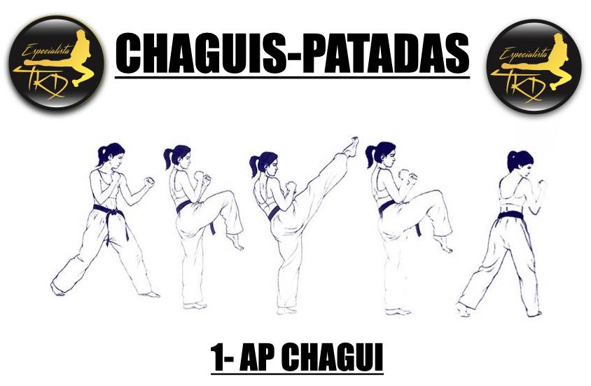
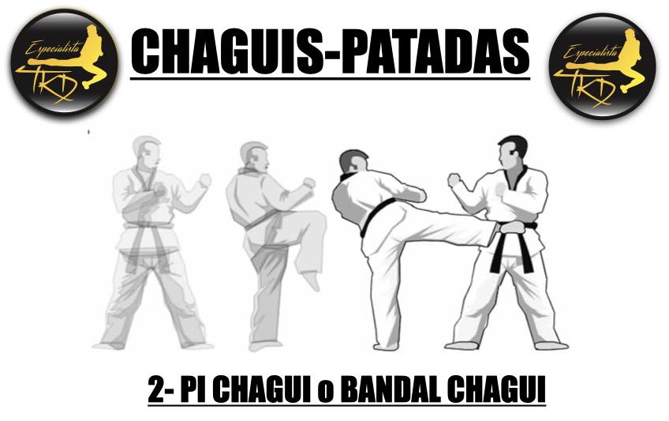
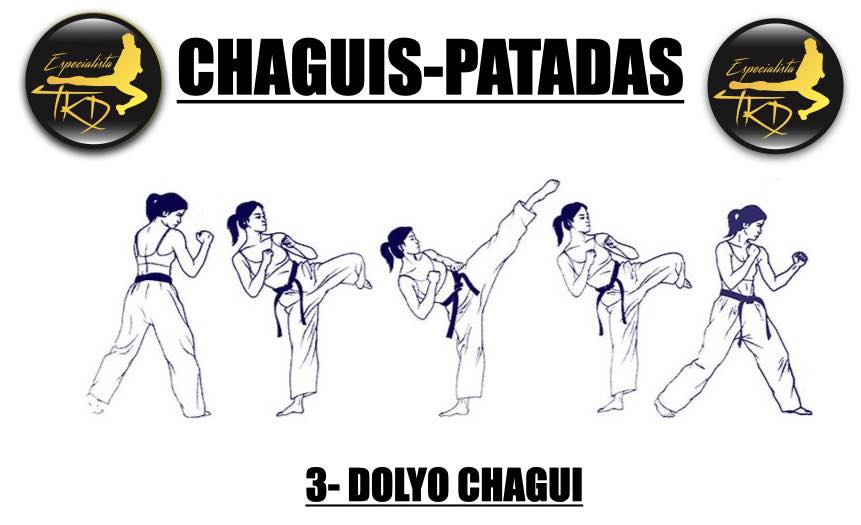
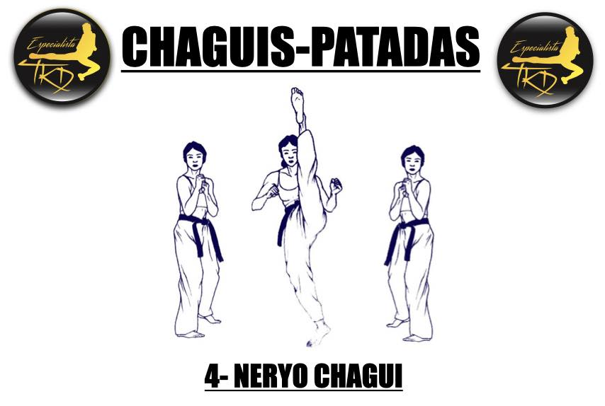
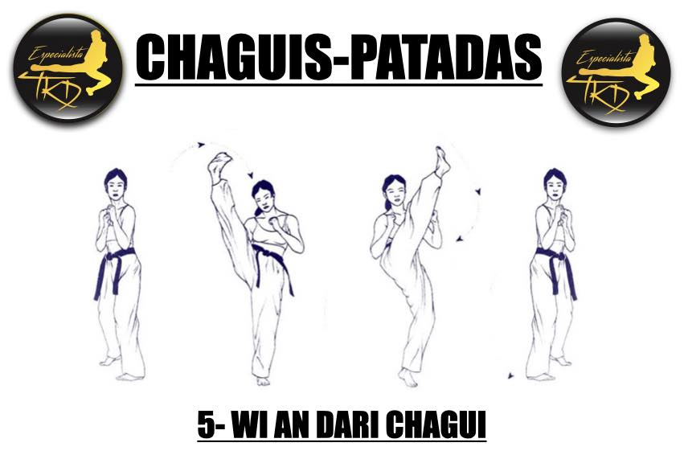
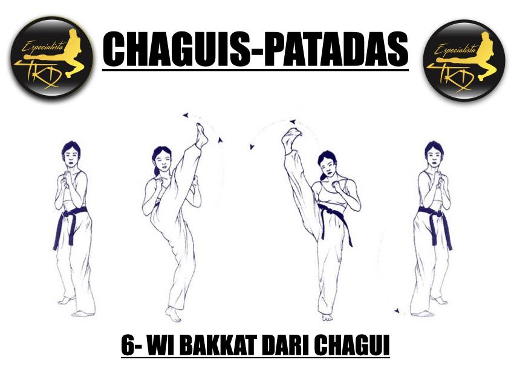
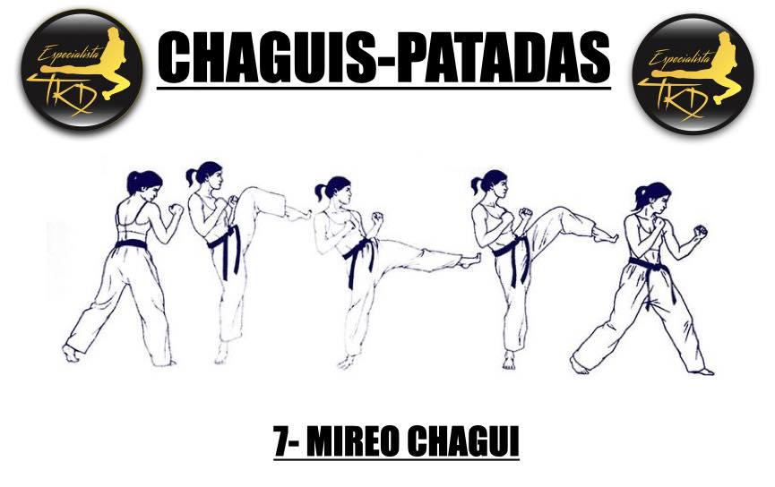
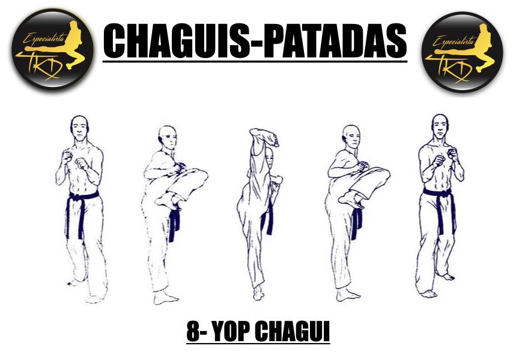
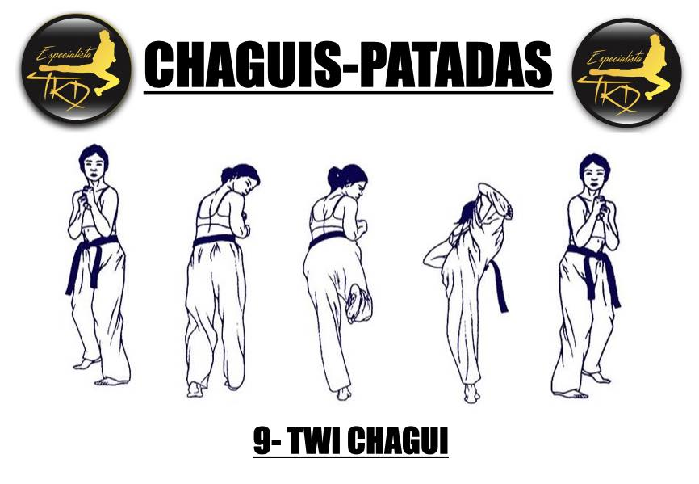
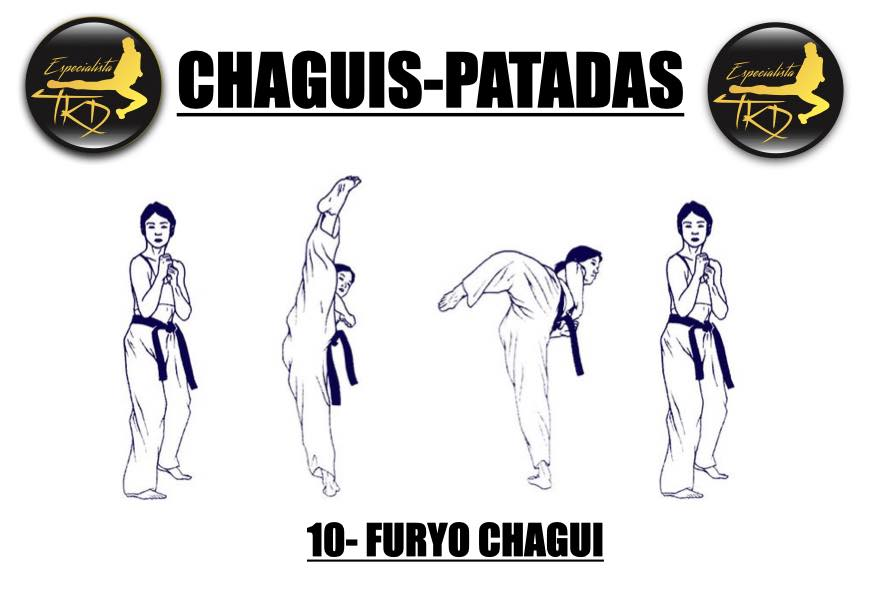
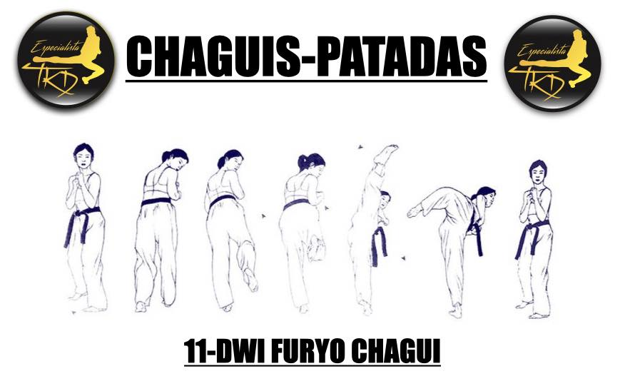
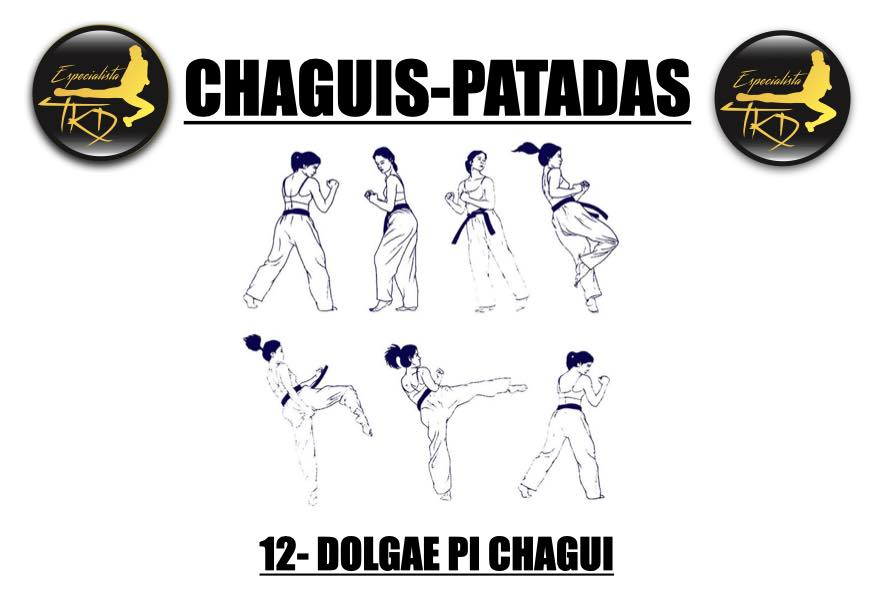
DEFENSAS (MAKI SUL) Principio
- ARE MAKI: Defensa abajo.
- MONTONG MAKI: Defensa al medio.
- OLGUL MAKI: Defensa alta.
- MONTONG BAKAT MAKI: Defensa lateral.
- JAN SONNAL MONTONG BAKAT MAKI: Defensa lateral con una mano abierta.
- SONNAL MONTONG MAKI: Defensa lateral con las dos manos abiertas.
- AN PALMOK MONTONG BAKAT MAKI: Defensa lateral con la zona radial del brazo.
- BAKAT PALMOK MONTONG BAKAT MAKI: Defensa lateral con la zona cubital del brazo.
- ARE GECHIO MAKI: Defensa descruzando los brazos abajo.
- GODURO MONTONG MAKI: Defensa lateral doble con ayuda al medio.
- BAKAT PALMOK MONTONG GECHIO MAKI: Defensa descruzando los brazos al medio defendiendo con la parte radialdel brazo.
- AN PALMOK MONTONG GECHIO MAKI: Defensa descruzando los brazos al medio defendiendo con la parte cubital delbrazo.
- SONNAL ARE MAKI: Defensa lateral abajo con las dos manos abiertas.
- BATANSON MONTONG MAKI: Defensa al medio con la mano.
- BATANSON GODURO MONTONG MAKI: Defensa al medio con la mano con ayuda.
- JAN SONNAL OLGUL BITURO MAKI: Defensa con la mano abierta a la zona de la cara, mano contraria a pieadelantado.
- KAWI MAKI: Defensa con los dos brazos en forma de tijera.
- BAKAT PALMOK OLGUL BAKAT MAKI: Defensa alta con el lado radial del brazo.
- OE SANTUL MAKI: Defensa a dos alturas (arriba y abajo).
POSICIONES (SOGUIS) Principio
- CHARIAT: Pies juntos (FIRMES, ATENCIÓN).
- CHUMBI: Posición de preparados.
- CHUCHUM SOGUI: Posición montar a caballo.
- AP KUBI: Posición hacia delante larga.
- AP SOGUI: Paso normal.
- TUIT KUBI: Posición atrás corta (Forma de «L»).
- PIONJI SOGUI: Posición cómoda de los pies.
- NARANJI SOGUI: Posición anchura de los hombros, pies al frente y paralelos.
- TUIT KOA SOGUI: Posición cruzando los pies por detrás.
- AP KOA SOGUI: Posición cruzando los pies por delante.
- BOM SOGUI: Posición del tigre, un pie delante de otro.
- UEN SOGUI: Posición con el pie izquierdo hacia un lado.
- ORUN SOGUI: Posición con el pie derecho hacia un lado.
ATAQUES (KONGKIOK) Principio
- MONTONG CHIRUGUI: Ataque con puño al medio.
- DUBON MONTONG CHIRUGUI: Dos ataques con el puño al medio.
- OLGUL CHIRUGUI: Ataque con puño a la altura de la cara.
- SONNAL AN CHIGUI: Ataque al cuello con la parte interna de la mano, se hace con pierna contraria (manoabierta).
- MONTONG BANDE CHIRUGUI: Ataque con puño al medio, misma pierna adelantada.
- MONTONG BARO CHIRUGUI: Ataque con puño al medio, distinta pierna adelantada.
- PION KUT SEWO CHIRUGUI: Ataque a la altura del estómago, pinchando con la punta de los dedos.
- YOP CHIRUGUI: Ataque de puño lateral.
- DUNG CHUMOK APE CHIGUI: Ataque al frente (boca o nariz) con nudillos.
- CHEBIPUM MOK CHIGUI: Ataque al cuello con la parte interna de la mano (mano abierta) y defensa arribacon la mano abierta.
- ME CHUMOK NERYO YOP CHIGUI: Ataque lateral descendente con el canto del puño.
- PALKUP DOLLYO CHIGUI: Ataque circular con el codo.
- PALKUP PIOCHOK CHIGUI: Ataque con el codo golpeando una diana (en este caso la mano).
- DUNG CHUMOK BAKAT CHIGUI: Ataque con la parte superior de los nudillos hacia el exterior (zona de lasien).
- DU CHUMOK CHECHO CHIRUGUI: Ataque simultáneo de los dos puños a las costillas.
- DANGKIOK OLIO MURUP CHIGUI: Ataque con la rodilla agarrando al adversario.
- BO CHUMOK: Movimiento PUM (mano izquierda envuelve puño derecho).
Inicio